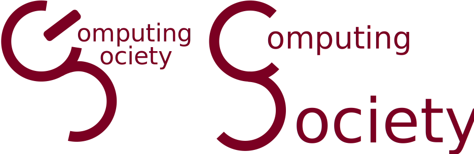

Typeface
Here's a bunch of terrible attempts at a typographic logo. Starting with the an attempt based on the original logo attempt. There is likely to be issues with proper reading due to the combined C/S. Does not send any sort of message.

Avert your gaze for this one. This one intended to utilize only 0's and 1's (or reminants of them in some cases) to give the appearance of binary from a distance, where the letters resembling 0's would be computer terminals. which are connected in a "network" i.e. the Society
Finally, here's an entirely different approach. Using a simple font, and color scheme designed to mimic a method and syntax coloring in the Java programming language
Without the extras for light or dark backgrounds (such as this page)